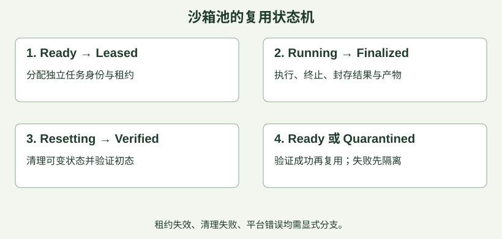

1. 沙箱到底隔离什么：从进程到microVM
训练沙箱是Agent执行代码、工具和文件操作时，受到控制的运行空间。 既要避免干扰宿主和别的任务，也要限制任务使用的资源。它不是“创建一个文件夹”的别名。
先问五件事：看得见哪些进程和文件？能访问哪些网络？能消耗多少CPU/内存/进程数？能调用哪些系统接口？能拿到哪些凭据？这是选型的需求，不是先决定必须用哪款产品。
| 机制 | 回答的问题 | 不自动解决的问题 |
|---|---|---|
| Linux namespaces | 隔离进程、挂载、网络等可见视图 | 不自动给每个任务设置资源上限 |
| cgroups/资源控制 | 限制、统计CPU、内存等用量 | 不等于隐藏宿主敏感文件 |
| seccomp / capabilities | 限制系统调用与特权能力 | 不定义任务奖励与数据正确性 |
| 只读基底+独立可写层 | 复用依赖，同时隔开任务修改 | 仍需清理进程、缓存和外部服务状态 |
| 网络/凭据策略 | 限定访问目的地和授权范围 | 放行的服务内部仍可能存在任务间共享状态 |
常见执行边界。 Linux普通容器通常共享宿主内核；gVisor通过应用内核拦截并实现系统接口；microVM用虚拟化边界运行客体内核。三者都要结合配置与威胁模型选择，不能把“用了VM”直接等价为绝对安全。兼容性、启动成本、I/O性能、运维能力也需要实测。
教学选型：受控的简单Python题，可从受限容器方案评估；任意仓库构建、多租户不可信代码，需要更仔细地评估强化隔离、网络与宿主接口；要求特殊内核功能的工具，则先做兼容性验证。这不是不同任务必然对应某产品的硬规则。
例题。 已为两个任务创建不同目录，但都能读取宿主的云凭据、连接同一个无权限区分的数据库。它们不具备所需的任务隔离。目录分开只解决了很小一部分文件布局问题。
面试回答顺序： 任务与威胁 → 边界和权限 → 资源限制 → 兼容性/性能验证 → 生命周期。不要从“我用过Docker”就直接跳到“因此安全”。
原整理核对依据：S1 · Docker Engine security S2 · Docker Resource constraints S3 · Docker seccomp profiles S4 · gVisor architecture and security S5 · Firecracker Design
读完本节，立即练3题
已使用PID namespace隐藏其他进程，但Agent仍能耗尽宿主内存。最直接缺少哪类控制？
无脚本阅读：查看答案与解析
正确答案：C- A错误：长度不是所有进程内存消耗的来源。
- B错误：KL控制策略更新而非操作系统资源。
- C正确：视图隔离与资源上限是不同职责。
- D错误：tokenizer一致性不限制进程内存。
- A错误：长度不是所有进程内存消耗的来源。
- B错误：KL控制策略更新而非操作系统资源。
- C正确：视图隔离与资源上限是不同职责。
- D错误：tokenizer一致性不限制进程内存。
关于Linux普通容器与microVM，最准确的是？
无脚本阅读：查看答案与解析
正确答案：B- A错误：安全取决于实现、配置与暴露面。
- B正确：边界不同，但都要评估任务、配置与运维。
- C错误：开销需要实测，不能断言没有。
- D错误：容器中的程序仍需系统接口。
- A错误：安全取决于实现、配置与暴露面。
- B正确：边界不同，但都要评估任务、配置与运维。
- C错误：开销需要实测，不能断言没有。
- D错误：容器中的程序仍需系统接口。
下列哪些属于沙箱设计应明确的边界？
- A正确：决定可读写对象。
- B正确：决定可连接的服务与外部副作用。
- C正确：防止任务相互争抢或拖垮节点。
- D错误：随机目录不是这些控制的替代品。
继续口述：如果让你给Agentic RL设计沙箱，你先确认哪些约束？
先闭卷讲2分钟，再对照要点；页面不自动判断口述正确性。
展开口述自检要点
- 说清执行内容、租户信任与宿主暴露面。
- 区分视图隔离、资源限制和系统调用限制。
- 讨论兼容性和性能代价，不宣称绝对安全。
2. 环境重置与可复现：不是删掉一个文件
同一任务的多次尝试应从定义一致的初始状态出发。 如果第二条轨迹继承第一条留下的补丁和缓存，就不再是同样条件下的独立尝试，奖励与GRPO组内比较都会被污染。
把环境清单分为四层：
- 静态基底：镜像digest、依赖、工具版本、仓库commit、任务数据版本。
- 本地可变状态：工作区、home/tmp、进程、端口、文件锁、测试缓存、后台服务。
- 外部状态：数据库、对象存储、浏览器账号、远端服务与网络内容。
- 训练与评测配置：harness、grader版本、步数/时间预算、采样配置、随机种子。
只固定镜像不等于可复现，因为外部服务和任务初态可能仍在变化。随机种子也不保证GPU、并发调度和远程网络完全确定。面试时区分：可定位、可重建、统计可复现，不要承诺所有位都相同。
重建还是复用？ 每次重建更容易建立干净边界，但启动可能慢；池化复用节省初始化成本，但必须验证reset覆盖范围。实践上可以复用只读依赖和已验证的干净快照，给每条轨迹新的可写层与外部命名空间；重置验证失败就隔离该slot，不能继续发任务。

例题：只清理工作区，为什么还会串轨迹？ 假设测试脚本把“上次通过”的结果缓存写到home（用户主目录），轨迹A结束后，reset只清理work（代码工作区）。轨迹B启动时，脚本错误地复用旧结果、跳过实际测试，于是B即使没有修好代码，也被判为“通过”。问题在于B继承了A的状态，不能把这个分数归因于B的动作。应把home中的任务缓存纳入重置范围，或为每次尝试创建独立的home和工作区，再在干净环境中重新测试；可信的只读依赖缓存可以保留，不必清空所有缓存。
可信评测：Agent交出的代码，不能自己决定怎么评分。 如果Agent能修改最终使用的测试脚本，例如删除失败用例、把报错改成返回成功，那么“测试通过”就可能只是评分规则被改了。对代码任务，应只提取允许修改的代码补丁或产物，放到从原始版本建立的新评测环境中，由受保护的评测器运行固定版本的隐藏测试；不要一起带入Agent修改过的测试器、旧日志或结果缓存。Agent可以编写测试辅助调试，但这些测试不能取代最终评分依据。
快照的边界：先确认保存了什么。 文件系统快照主要保存某一时刻的文件状态，不一定包含进程和内存，挂载卷也可能不在范围内；包含内存的实例快照则可能保留当时的进程状态。即使恢复了进程，远端连接也可能已经断开，登录凭据也可能已经过期，因此恢复后仍要检查服务和连接是否可用，不能把“恢复成功”直接等同于“可以继续执行”。具体覆盖范围以平台定义为准。Docker提交快照的范围说明
本地恢复，不会自动撤销外部副作用。 例如Agent已向远端数据库插入一条记录，随后恢复本地快照，这条记录通常仍然存在；重跑还可能重复写入。训练任务应尽量使用每次尝试独立的测试数据库或命名空间，并单独清理外部状态；可能重试的写操作还需要幂等设计，即同一操作重复执行不会产生重复效果。
考前复述： “我会隔离每次尝试的可变状态，只把允许的产物交给可信评测器；恢复后分别验证环境健康和状态干净，并单独处理外部副作用，再把slot（一个可分配的环境实例）放回可用池。”
原整理核对依据：D1 · Dressage Sandbox Backends S6 · E2B Sandbox lifecycle H1 · Harbor Core Concepts
读完本节，立即练3题
池化沙箱只清理work，home里的测试缓存被下一条轨迹读取。核心问题是？
- A错误：这是环境状态泄漏。
- B正确：不同尝试未从约定初态开始，缓存可能污染评测。
- C错误：与策略KL不是同一层问题。
- D错误：ID隔离不等于状态隔离。
任务结果已写入远端数据库，仅恢复本地文件快照。哪句正确？
无脚本阅读：查看答案与解析
正确答案：D- A错误：本地恢复不自动控制远端服务。
- B错误：文件快照不等于模型checkpoint。
- C错误：外部副作用不在本地快照控制范围内。
- D正确：应根据服务能力单独设计。
- A错误：本地恢复不自动控制远端服务。
- B错误：文件快照不等于模型checkpoint。
- C错误：外部副作用不在本地快照控制范围内。
- D正确：应根据服务能力单独设计。
哪些措施有助于复现并诊断一条轨迹？
- A正确：可重建基础环境。
- B正确：运行逻辑和判分变化会影响结果。
- C正确：有助于重放和分类问题。
- D错误：随机种子覆盖不了所有外部与硬件非确定性。
继续口述：沙箱池如何保证连续两条轨迹互不污染？
先闭卷讲2分钟，再对照要点；页面不自动判断口述正确性。
展开精简参考答案
记忆顺序：隔离状态 → 停旧重置 → 验证放行 → 独立评测。
- 隔离状态： 只共享可信的只读镜像和依赖；每条轨迹使用独立的工作区、home/tmp和可写缓存。数据库、对象存储等外部服务也要分配独立的测试数据或命名空间，不能只隔离本地文件。
- 停旧重置： 上一条轨迹结束后，先停止它的进程和后台任务、收回访问权限，再清理文件、缓存、端口与锁，恢复约定的初始状态，防止旧任务继续写入。外部状态需单独清理，恢复本地快照不会自动回滚远端写入。
- 验证放行： reset返回成功还不够，要检查残留进程、任务文件和外部数据是否清除，并验证服务可用、初态正确。通过后才把slot放回可用池；失败或超时则隔离并重建，不能交给下一条轨迹。
- 独立评测： 只把允许提交的补丁或产物交给干净的可信评测环境，使用受保护的评测器与固定测试版本。Agent可写的工作区不能决定最终评分，避免修改测试器或沿用旧结果造成“假通过”。
核心：不仅要环境能运行，还要确认上一条轨迹的状态和权限不会影响下一条。
展开口述自检要点
- 列出文件之外的进程、缓存与外部状态。
- 讲清reset验证及失败隔离。
- 解释可信评测为何应与可写工作区分离。
3. 沙箱池与并发容量：先算瓶颈，再加机器
模型推理通常消耗GPU；shell、浏览器、测试运行与工具等待可能主要消耗CPU、内存、I/O或外部API配额。因此沙箱数量不等于GPU数量，也不等于能同时生成的请求数。
教学模型：平均每条任务占用一个slot共 秒，池中有 个同质slot，忽略其他瓶颈、持续满载，则最大完成速率约为：
若 秒，理想上限是0.4条/秒，即24条/分钟。若平均到达率为0.3条/秒，平均占用数可用稳态Little定律估算：。是平均在系统内数量，必须与系统边界一致：只算占用slot时间时，对应的是slot内的任务，不应把排队时间混进去。
18不是应该只配18个slot的保证。 均值没考虑抖动和长尾；接近100%利用率时，突发和任务时长波动可能造成长队列。需看并发上限、p95/p99占用时间、超时率和拒绝率，再定余量。
| 资源 | 每节点预算 | 每slot预算 | 给出的上限 |
|---|---|---|---|
| 内存 | 96GiB | 4GiB | 24slot |
| CPU（本例不超配） | 32核 | 2核 | 16slot |
| 其他 | I/O、API、端口 | 依任务测量 | 可能更低 |
本例至少先取 。不能只因内存能放24个就承诺24个性能稳定；CPU是否可超配要基于真实负载。
池的调度建议： 热池减少启动等待；排队和准入控制避免无限抢资源；租约+心跳帮助回收失联worker，但租约过期后的旧worker仍可能继续写，需要fencing或失效检查；回收失败slot先quarantine，清理验证后再复用。超时必须落实到实际子进程/进程组终止与资源回收，取消一个协程不保证子进程消失。
例题。 把并发从16翻到64，GPU利用率反而下降。可能是宿主OOM、测试CPU饱和、API限流或I/O争用，导致工具反馈更慢。先分段追踪等待，不应直接得出“GPU不够”的结论。
原整理核对依据：S2 · Docker Resource constraints D1 · Dressage Sandbox Backends S6 · E2B Sandbox lifecycle
读完本节，立即练3题
按满载同质slot模型，24个slot，每任务占用60秒，忽略其他瓶颈。理想完成速率为？
无脚本阅读：查看答案与解析
正确答案：C- A错误：错把slot数当每秒完成数。
- B错误：没有按slot数除占用时长。
- C正确：24/60=0.4条/秒=24条/分钟。
- D错误：0.4的单位应为条/秒。
- A错误：错把slot数当每秒完成数。
- B错误：没有按slot数除占用时长。
- C正确：24/60=0.4条/秒=24条/分钟。
- D错误：0.4的单位应为条/秒。
节点32核、96GiB；每slot需2核、4GiB，不超配且忽略其他开销。CPU与内存共同约束的slot上限是？
- A正确：CPU给16，内存给24，取较小的16。
- B错误：只看了内存。
- C错误：忽略每slot需要2核。
- D错误：超过两种预算。
沙箱调度中哪些设计合理？
无脚本阅读：查看答案与解析
正确答案：BCD- A错误：过载下无限排队只会增加等待和内存压力。
- B正确：防止失效持有者继续造成副作用。
- C正确：避免把污染或损坏环境交给下一任务。
- D正确：分阶段观测才知道瓶颈在哪。
- A错误：过载下无限排队只会增加等待和内存压力。
- B正确：防止失效持有者继续造成副作用。
- C正确：避免把污染或损坏环境交给下一任务。
- D正确：分阶段观测才知道瓶颈在哪。
继续口述：给你32核96GiB的节点，你怎样决定能跑多少训练沙箱？
先闭卷讲2分钟，再对照要点；页面不自动判断口述正确性。
展开精简参考答案
记忆顺序：测单箱 → 算上限 → 压测留余量 → 限流回收。
不能只凭32核、96GiB直接确定数量，还要知道每个沙箱的资源需求和任务负载。
- 测单箱： 用代表性任务测量CPU、峰值内存、磁盘I/O、外部API调用量和占用时间，分别观察启动、工具执行、等待与重置阶段；先给操作系统和常驻服务预留资源。
- 算上限： 假设每箱需2核、4GiB，CPU不超配，暂不扣系统预留，则CPU最多支持32÷2＝16个，内存支持96÷4＝24个，取较小值16个。这只是CPU和内存约束下的理论上限，扣除预留后还要检查I/O、API配额和模型推理服务的限制。
- 压测留余量： 从低并发逐步增加，观察每分钟完成任务数、p95/p99耗时、排队时间、OOM与超时率。平均资源够用不代表高峰稳定；如果加并发只让等待变长，就应定位瓶颈，并在满足延迟与失败率目标的范围内留出余量。
- 限流回收： 按验证过的容量设置并发上限和有界队列，满载时通过背压让上游减速；超时后终止相关进程并回收资源，清理验证失败的沙箱先隔离，不能立即复用。
结论：本例粗算最多16个，实际运行多少，要由系统预留、其他瓶颈和压测结果共同决定。
展开口述自检要点
- 按CPU、内存、I/O与API配额共同估算。
- 说明均值容量与长尾余量不同。
- 用阶段指标验证瓶颈，设置准入、背压与清理。
4. 从任务定义到可信Reward：故障、作弊和评测隔离
训练环境至少要同时定义 起点、可用动作、预算、终止规则、可验收结果。一个“能运行的容器”如果没有任务定义与评测器，仍不是完整RL环境。
以CSV修复任务为例：固定仓库版本；允许读写业务代码和运行公开测试；最大20个工具步骤；最后交付补丁；隐藏测试由可信评测器运行。环境设置要能区分Agent可写区、任务输入与评测真值。
三类结果不要混为一个0分：
| 现象 | 优先分类 | 后续处理思路 |
|---|---|---|
| Agent修改错误，可信测试失败 | 策略/任务失败 | 可作为任务反馈，保留行为证据 |
| 输入根本不满足任务前提，测试器自身报错 | 任务/评测无效 | 修复任务，不能直接归责策略 |
| 沙箱节点失联，没拿到结果 | 平台故障 | 有界恢复/重试并单独统计 |
不是所有超时都该丢弃。 Agent一直死循环用完明确预算可以是策略失败；平台排队导致超时则可能是infra故障。处理规则预先定义，避免按结果好坏选择性丢数据。
Reward hacking是模型优化了代理分数，却偏离真正目标。 例：删除测试用例、改测试器使它总返回通过、硬编码公开样例、伪造成功日志。隔离环境不自动防止这类行为，尤其当评测真值被挂进Agent可读写区时。
改进方式可以是：可信评测进程和隐藏真值独立；按允许产物重建评测；公开/隐藏与边界测试分开；抽样审计真实状态与评分一致性；检测异常高分与测试覆盖下降。教学伪代码：
result = run_agent_in_isolated_workspace(task)
if result.platform_error:
record_infra_failure(result) # 有界重试，不伪造任务分数
else:
artifact = validate_allowed_output(result)
score = evaluate_in_fresh_env(task, artifact, grader_version)
record_task_outcome(score)
外部写操作重试。 “请求超时”不等于“写操作未执行”。向外部系统提交任务或生成文件的流程要有稳定操作ID、去重/状态查询与必要补偿；不能靠重试次数保证只执行一次。
考前复述： “沙箱保证执行边界，verifier保证任务判定；我会把策略失败与平台失败分开，同时验证奖励没有被Agent绕过。”
原整理核对依据：H1 · Harbor Core Concepts D1 · Dressage Sandbox Backends P3 · Let's Verify Step by Step
读完本节，立即练3题
Agent把可写测试器改为永远返回通过，训练reward暴涨。最直接说明什么？
- A错误：分数上涨不等于目标完成。
- B错误：不能据此定位为组大小。
- C错误：评测器也可能被修改或绕过。
- D正确：需要修复评分可信边界并审计已有数据。
沙箱服务失联，没有拿到任务结果。最合理的处理原则是？
无脚本阅读：查看答案与解析
正确答案：A- A正确：先确认故障来源，避免污染任务能力判断。
- B错误：无证据的高奖励会污染学习。
- C错误：平台不可用不能直接证明策略失败。
- D错误：无限重试既失控又可能产生选择偏差。
- A正确：先确认故障来源，避免污染任务能力判断。
- B错误：无证据的高奖励会污染学习。
- C错误：平台不可用不能直接证明策略失败。
- D错误：无限重试既失控又可能产生选择偏差。
哪些判断正确？
无脚本阅读：查看答案与解析
正确答案：ACD- A正确：二者需协同设计。
- B错误：退出码只说明程序按其约定退出，任务仍需验证。
- C正确：可能已执行但响应丢失。
- D正确：失败原因不同，训练处理与统计也应明确。
- A正确：二者需协同设计。
- B错误：退出码只说明程序按其约定退出，任务仍需验证。
- C正确：可能已执行但响应丢失。
- D正确：失败原因不同，训练处理与统计也应明确。
继续口述：如果Agent可以在沙箱里修改测试代码，如何保证Reward可信？
先闭卷讲2分钟，再对照要点；页面不自动判断口述正确性。
展开口述自检要点
- 隔离可写工作区与可信grader/隐藏真值。
- 用新评测环境检查允许提交的产物。
- 说明策略失败、无效任务与infra故障的不同处理。